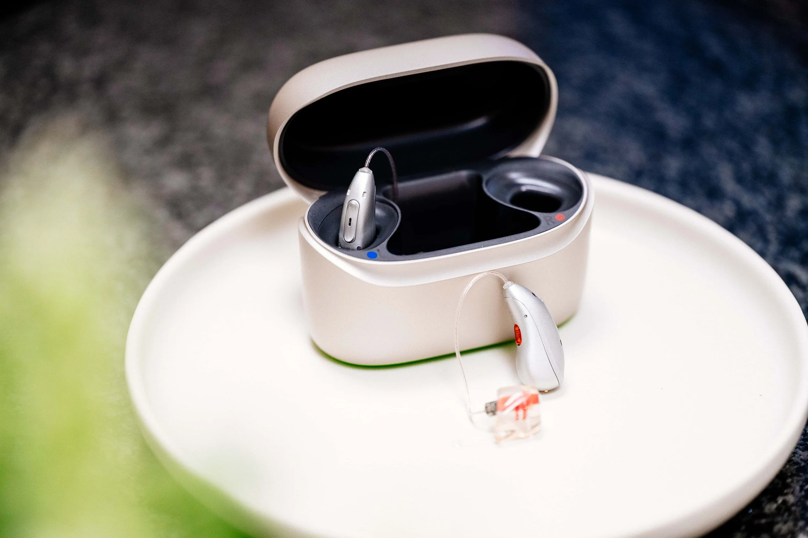
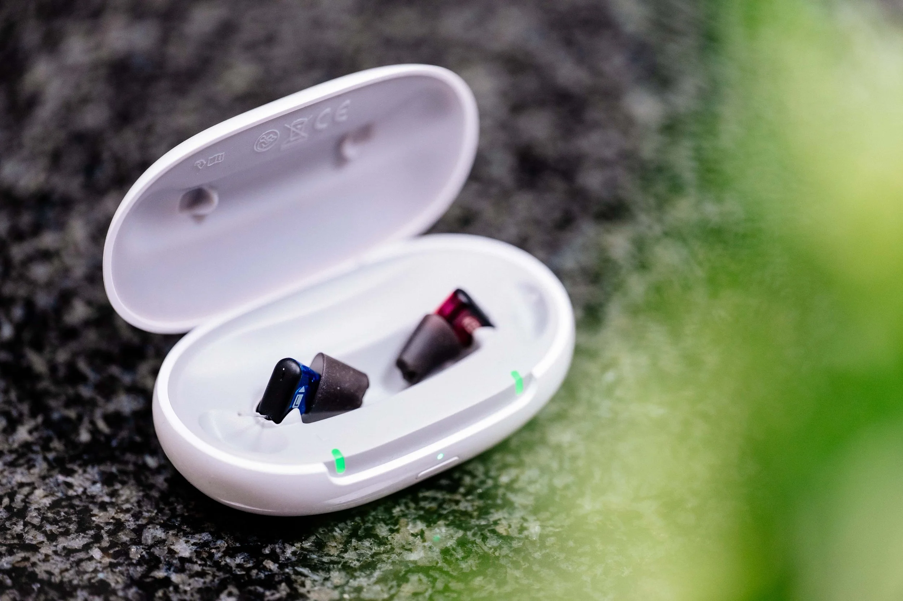

Hörgeräte in Rösrath — Ihr bestes Sprachverstehen mit der Hoffnungsohr-Target Anpassung
Ihr bestes Sprachverstehen — in jeder Situation.
Beim Hoffnungsohr in Rösrath erhalten Sie moderne Hörgeräte führender Hersteller — individuell angepasst mit unserer einzigartigen Hoffnungsohr-Target.
Diese Anpassungstechnik stellt sicher, dass Ihr Hörgerät nicht nur technisch korrekt eingestellt ist, sondern perfekt zu Ihrer persönlichen Hörsituation, Ihrem Alltag und Ihrer Umgebung passt.
Das Ergebnis: ein natürlicheres Hörerlebnis von Anfang an.

Ihr bestes Sprachverstehen
Mit Hörgeräten können Sie Gesprächen wieder entspannter folgen, auch in geräuschvoller Umgebung. Musik ist wieder in ihrer gesamten Klangbreite erlebbar.
Wenig zu verstehen ist anstrengend für Körper und Geist. Ein individuell angepasstes Hörgerät sorgt für ein besseres Allgemeinbefinden und unterstützt die räumliche Orientierung.

Mehr Freude
Mit einer passenden Hörlösung nehmen Sie am sozialen Leben wieder uneingeschränkt teil. Sorglos mit Freunden und Familie sprechen zu können, macht glücklich. Leichter beim TV-Schauen alles zu verstehen, macht die Zeit auch deutlich entspannter.

Mehr Erfolg
Wer mehr hört, versteht weniger falsch — im Alltag wie im Berufsleben. Das schafft Verhandlungssicherheit und sorgt für mehr Selbstvertrauen. Sich auf sein Gehör wieder verlassen zu können, mindert Stress und verhindert Fehler.
Moderne Hörgeräte vom Hoffnungsohr reduzieren Störgeräusche auf ein Minimum und ermöglichen so auch wieder angenehmes Arbeiten in geräuschvoller Umgebung.
Welche Hörgeräte-Bauformen gibt es?
Bei den Hörgeräte-Bauformen unterscheidet man vorrangig zwischen Hinter-dem-Ohr-Hörgeräten (HdO) und In-dem-Ohr-Hörgeräten (IdO).

Hinter-dem-Ohr-Hörgeräte
Hinter der Ohrmuschel sitzt ein kleiner, unauffälliger Empfänger mit Mikrofonen und Batterie. Die Schallausgabe befindet sich direkt im Gehörgang.
Die Verbindung erfolgt entweder mit einem dünnen, transparenten Schlauch oder mit einem transparenten Kabel. Durch diese Bauweise verbinden HdO-Hörgeräte den größtmöglichen Funktionsumfang mit einer unauffälligen Optik.
HdO-Hörgeräte sind für nahezu jede Art von Schwerhörigkeit erhältlich — auch für hochgradige Hörprobleme. Je nach Preisklasse ist eine Verbindung über Bluetooth mit Smartphone oder TV möglich.

Im-Ohr-Hörgeräte
Die gesamte Technik verschwindet im Gehörgang — besonders unauffällig und unempfindlich gegen Berührungen durch Kleidung oder Kopfbedeckungen.
IdO-Hörgeräte können kaum verrutschen oder unbeabsichtigt aus dem Ohr fallen, sodass sie gut beim Sport und in der Freizeit getragen werden können. Sie gibt es als individuelle Maßanfertigung mit Batterie oder Akku in unterschiedlichen Größen.
Eine Alternative sind Instant-Im-Ohr-Hörgeräte: ebenfalls sehr klein, jedoch von der Bauform immer gleich groß. Bluetooth-Verbindungen sind im IdO-Bereich meist nur bei größeren oder teureren Modellen möglich.